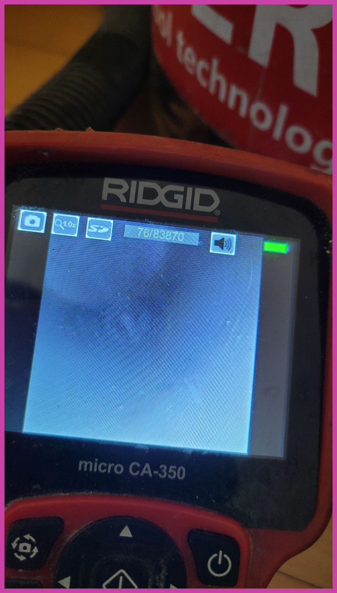
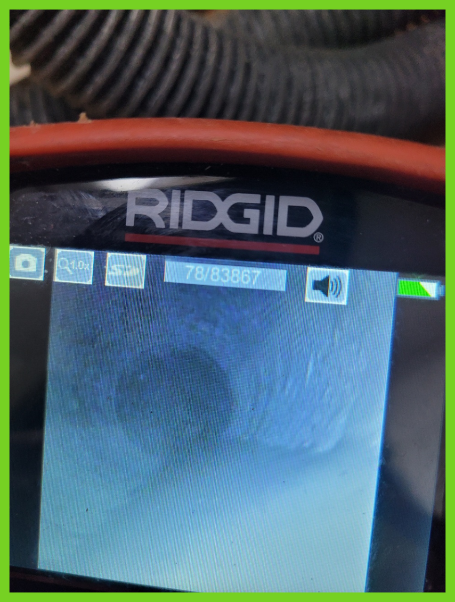
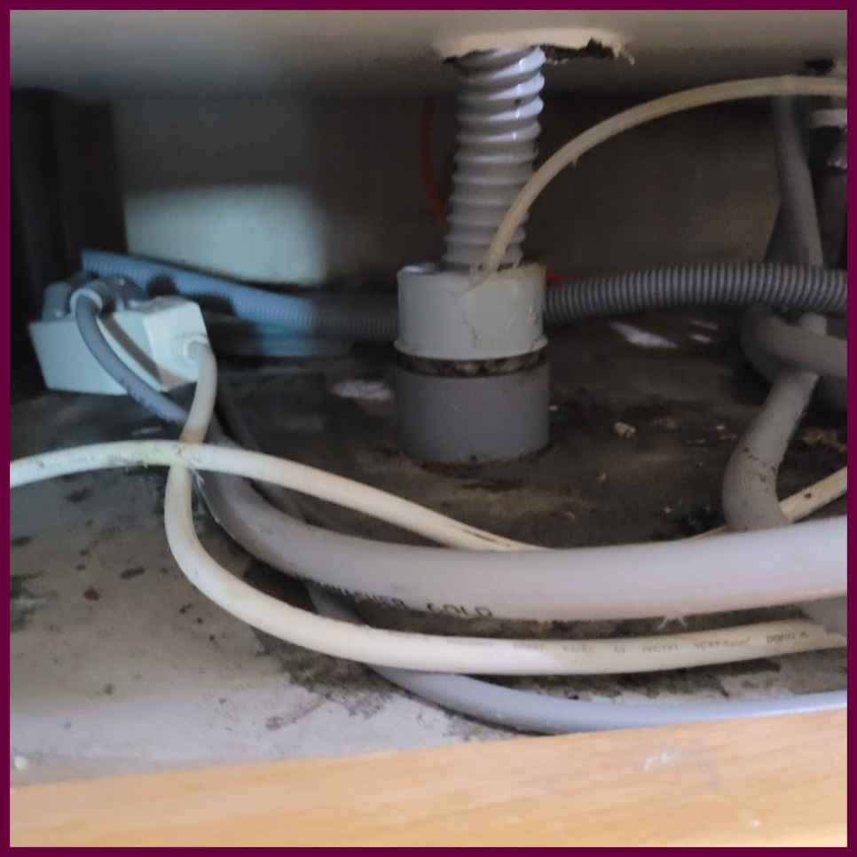
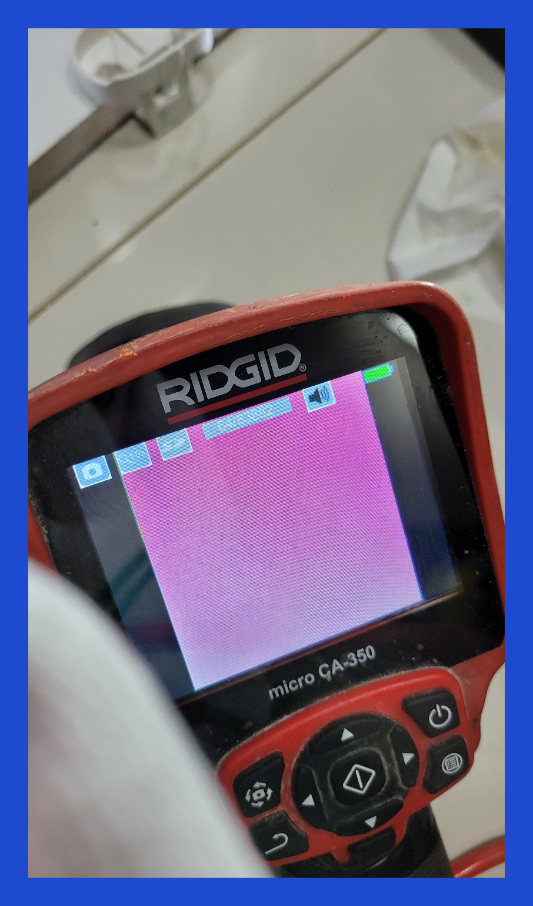
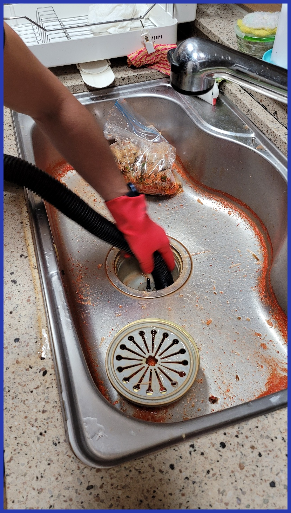
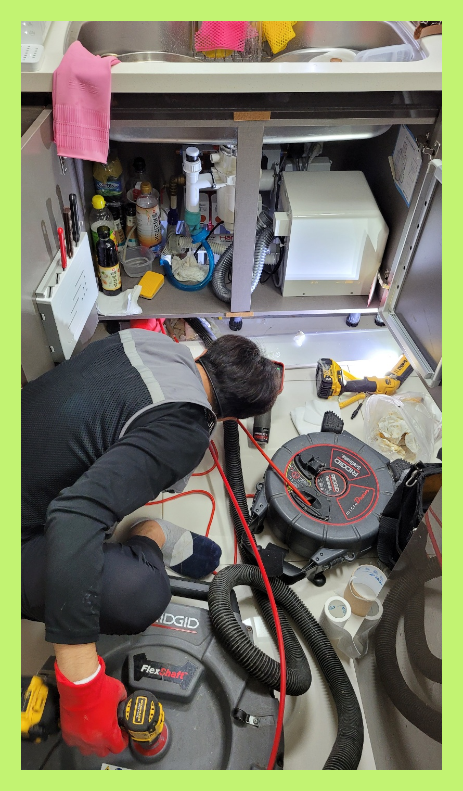

🏠 새솔동 해양동 싱크대막힘뚫음 송산그린시티 하수구전문업체
용인 새솔동 싱크대막힘 전문 시공 후기

📋 작업 개요
- 위치: 용인 새솔동, 새솔동, 용인
- 서비스 유형: 싱크대막힘, 변기막힘, 하수구막힘, 배관막힘, 뚫는업체, 배관청소
- 작업 일시: 2023. 9. 14. 13:01
- 업체명: 하수구수사대 (010-5615-2118)
🔍 문제 상황
우리가 살아가는데 있어서 의식주는 필수인데요 그가운데 식을 담당하는 공간인 주방 퇴수구막힘이 생길경우 위생부분에서 걱정이 될 것입니다.
아무래도 전문가를 불러야 하는 것 같기에 신속하게 출장이 되는 주변 전문업체에 전화해서 퇴수구 뚫는 작업을 요청하셨답니다.
새솔동 해양동 싱크대막힘뚫음 송산그린시티 하수구전문업체
내시경카메라로 막힌 위치와 원인이 무엇인지에 대해 확인이 가능합니다. 우리 몸이 어딘가 불편할때 곧바로 이유를 찾는 것처럼 배수구 배관도 비슷하며 이런 식으로 검사와 진단부터 하고 시공을해야 막힌 곳을 한번에 뚫을수 있답니다.

🔎 원인 분석
💡 전문가 진단: 새솔동 해양동 싱크대막힘뚫음 송산그린시티 하수구전문업체
수도권 모든 지역에서 경력 있는 퇴수구기사님들이 대기하고 있기 때문에 계신 지역이 어디든지 방문 드릴 수 있으며 아무리 심각한 상황이라고 할지라도 빠르게 대처해 드리기 위해서 1시간 이내 도착을 약속하고 있습니다.
매장을 운영하는 곳은 퇴수구막힘 문제가 생기면 빠르게 수리하는 것이 급선무이기 때문에 빠르게 출동해 확실한 서비스를 받고 싶으시다면 믿고 결정하셔도 좋습니다.
어떤 퇴수구 업체든지 내시경을 갖춘 곳을 이용하셔야 하는 가장 큰 이유랍니다. 관리사무소 같은 곳에서는 이런 기계 없이 도와주시기 때문에 정확하게 막힌 지점을 뚫어낼 수가 없어서 수일 안에 다시 막혀버리는 것입니다.
이럼으로 인해 배수구장비를 얼마나 갖추고 있는지 면밀히 알아보세요. 점성이 있는 기름때들은 소량일지라도 하수관 안에 남겨두게 되면 쌓이기 시작해서 소량이었던 것이 증식해 버리게 되어 틀어막게 되는 것인데요.
하수막힘이 발생하였다고 해서 무조건 셀프로 뚫어보시거나 단순하게 스프링 기기를 이용하는 방법은 정확한 문제를 해결하는 방법이 아닙니다. 현장의 문제를 정확히 파악한 후 적절한 방법을 통해서 해결해야만 비로소 모든 문제의 원인을 해결할 수 있습니다.

🔧 작업 과정
사전에 고객분들께 자세한 작업 내용과 비용에 대한 부분을 설명드려 투명한 견적으로 작업을 진행해드리며 고객분들도 견적에 대한 오해나 이해가 안되는 부분 없이,또 과잉 시공 걱정없이 시공을 받을 수 있도록 해드립니다.
배수구막힘을 해결하기 위해서 우선 부품의 교체가 필요한지를 먼저 살펴야 하는데요, 이물질이 쉽게 유입될 수 있는 낡은 부품이나 녹슨 부품을 체해 주면 어느 정도 재발을 방지할 수 있게 됩니다.
배수구내부 모습은 육안상 판별이어려운 특징때문이죠. 예방히기위해 하수관으로 찌꺼기들이 들어가지않도록 주의를 기울여야합니다.이럴때 요긴한것이 거름망같은 것들인데요
이와같은문제로인해 꾸준히케어 하셔야해요.하지만이것과는 다르게 하시는것조차 망설이시는데요. 배수구 깊숙한곳까지 직접보는게힘든 상황이원인이랍니다.
서비스면을 위주로 두고있기때문에 퇴수구 수리를도와드린후 재발해버린다면 변기막힘등의 잘못된버릇으로 막힌것외에는 12개월간 무료수리까지 마다하지않는답니다
배수구 수리를한번맡기시고도 여러차례의뢰하시는 고객분들이계셔서 빈틈없게끔 도와드리고있으며 신용을중요하게 여기고있어요.
내시경 장비가 하수구 배관 속을 훤히 보여주기에 하수구의 어느 한쪽도 놓치지 않고 꼼꼼하게 스케일링 작업을 진행할 수 있습니다. 퇴수구 막힘이 심한 구간도 집중적으로 작업을 할 수 있는 것이지요.
>


✅ 작업 완료
배관청소는 플렉스샤프트라는 장비를 사용하는데요 와이어 앞쪽에 체인이 회전을하면서 배출구배관벽면에 붙어있는 기름덩어리를 분쇄해주는 방식입니다. 회전반경이 배관크기보다 작기때문에 배관에 무리를 주지않고 작업이 가능해요.
내가 하지 못하는 일이라고 한다면 전문가를 불러서 처리하시기 바랍니다. 그게 정답임을 잊지 마시기 바라며 지금 막혀서 당황하셨다면 저희가 바로 달려가도록 하겠습니다.




⚠️ 주방 싱크대 배관 막힘 예방 수칙
- ✅ 기름기가 묻은 식기나 프라이팬은 설거지 전 키친타올로 반드시 기름때를 닦아내세요.
- ✅ 주기적으로 싱크대 개수대에 뜨거운 물을 가득 받아 한 번에 내려 배관 내부 기름을 씻어내세요.
- ✅ 배수구 거름망을 미세한 필터로 사용하시고 음식물 찌꺼기가 틈으로 새어 들지 않게 관리하세요.
- ✅ 베이킹소다와 식초를 뜨거운 물과 함께 일주일에 한 번씩 부어주면 배관 살균과 막힘 예방에 좋습니다.
💡 핵심 정리
- 확실한 장비 작업(내시경 점검 및 샤프트 스케일링)으로 원인을 뿌리 뽑습니다.
- 작업 후 1년 이내에 동일한 부위 재발 시 100% 무상 A/S 서비스를 보장합니다.
- 서울 · 경기 · 인천 전 지역에 24시간 언제든 긴급 출동할 수 있도록 항시 대기 중입니다.
❓ 자주 묻는 질문 (FAQ)
🚨 용인 새솔동 싱크대막힘 문제로 고민이신가요?
정확한 원인 진단과 확실한 시공으로 재발 없는 해결을 약속드립니다.
24시간 긴급 출동 | 서울 · 경기 · 인천 전지역 | 1년 내 재발 시 무상 A/S